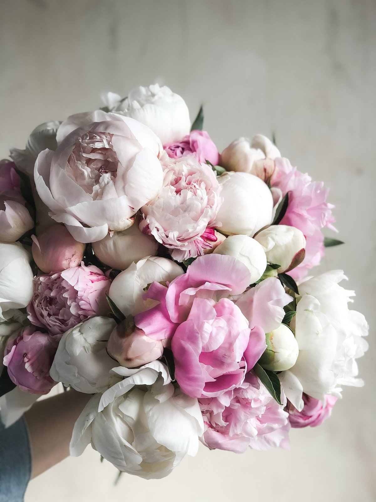
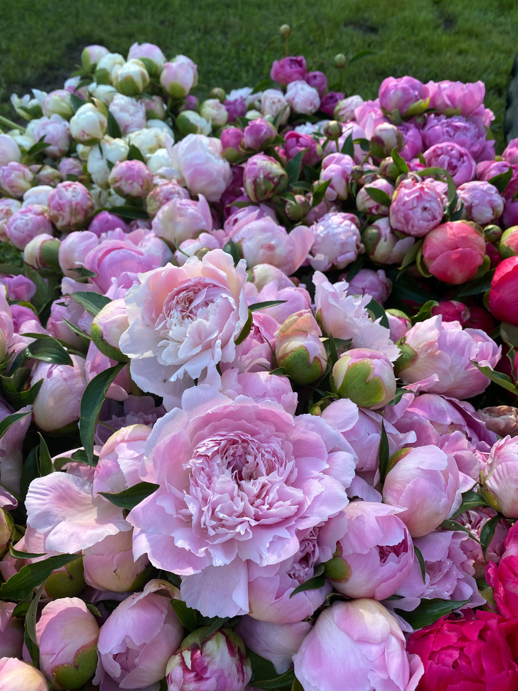
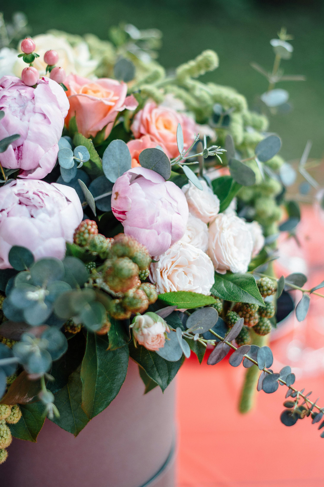

Peonies are beloved flowers that have captivated people for centuries with their large, lush blooms and vibrant colors. Originating primarily in Asia, Europe, and North America, peonies have a rich history that traces back thousands of years, especially in China. The Chinese have cultivated peonies as far back as 1000 BCE, often viewing them as symbols of wealth, honor, and prosperity. These flowers appear frequently in Chinese art and literature, reflecting their esteemed cultural significance. Eventually, the fascination with peonies spread to Japan, where they were similarly admired for their beauty and symbolism, as well as to Europe, where they became a favorite in classical gardens.
The primary species of peony, known as Paeonia, can be categorized into two types: herbaceous peonies and tree peonies. Herbaceous peonies die back in winter and regrow in spring, while tree peonies are woody shrubs that retain some of their structure year-round. Both types thrive in temperate climates, particularly those with cold winters, as the plants require a period of winter dormancy to bloom properly. In North America, peonies are particularly popular in the northern United States and Canada, where the cooler temperatures allow them to flourish.
Peonies grow best in full sun to partial shade and require well-drained soil to avoid root rot, a common issue in wet environments. While they can be somewhat slow to establish, often taking several years to bloom from seed, mature peony plants can live for decades and become more vibrant with age. Due to their durability and beauty, peonies have become a popular garden plant worldwide, and in recent years, they've seen a surge in popularity as wedding flowers, prized for their romantic, ruffled petals and long vase life.
Peonies are treasured for both their beauty and versatility, serving various purposes in floristry, traditional medicine, cosmetics, and even in culinary applications. Their most prominent use is ornamental, as they are widely grown in gardens and frequently used in floral arrangements, particularly for weddings and special events. Their large, lush blooms and vibrant colors add a sense of elegance and romance, making them a favorite among brides. Their long vase life and delightful fragrance also make peonies a popular choice in home décor, where they bring a fresh and refined aesthetic.
Beyond their decorative appeal, peonies have a long history in traditional medicine, especially in East Asia. In Traditional Chinese Medicine (TCM), peony root, known as "bai shao" (white peony) or "chi shao" (red peony), is used to treat a variety of ailments. It is believed to have anti-inflammatory, pain-relieving, and calming properties. Peony root is often included in herbal remedies for issues like menstrual cramps, headaches, and liver conditions, and research has supported some of these traditional uses, indicating that peonies contain compounds with antioxidant and anti-inflammatory effects. However, it's essential to consult a medical professional before using peony-based treatments, as they may have side effects or interact with other medications.
In cosmetics, peony extracts are commonly added to skincare products due to their purported antioxidant and brightening benefits. Peony extract is thought to help even out skin tone, reduce dark spots, and improve skin hydration, making it a sought-after ingredient in beauty formulations. Finally, some culinary traditions make use of peony petals in edible forms like teas, jellies, and even desserts. While they are safe in small quantities, caution is advised as not all parts of the peony plant are edible, and the roots and seeds, in particular, can be toxic if ingested in large amounts. Thus, peonies are valued not only for their aesthetic appeal but also for their broad range of uses across multiple fields.
Some men never think of it. You did. You’d come along And say you’d nearly brought me flowers But something had gone wrong.
The shop was closed. Or you had doubts — The sort that minds like ours Dream up incessantly. You thought I might not want your flowers.
It made me smile and hug you then. Now I can only smile. But, look, the flowers you nearly brought Have lasted all this while.
— from Serious Concerns